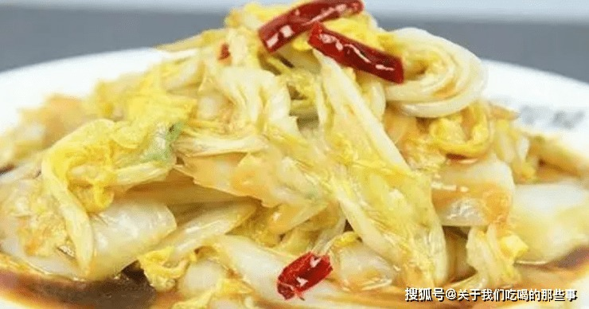

How to Make Chinese Spicy and Sour Cabbage

Description:
This is a classic Chinese recipe for a spicy and sour cabbage.
The ingredients are simple, and so is the preparation. I hope you enjoy it!
Ingredients
- 1 head of Chinese White Cabbage or Napa Cabbage
- 5 Red Chilis
- 5 Dried Red Chilis
- 1 Green Onion
- Black Chinese Vinegar
- White Vinegar
- Salt
- Cornstarch
- Cold Water
- Soy Sauce
- Chinese White Peppercorn Powder
- Vegetable Oil
Steps
- Wash the cabbage and slice into flakes about 2 inches square.
- Chop the chilies and dried chilies, as well as the green onion.
- Heat the oil in the wok on high heat. Drop in both types of chilis and green onions and cook, stirring constantly.
- After the aromas start flooding the air, put in the cabbage and stir.
- Drop in the white vinegar and cook for a few seconds, then add the black vinegar and salt to taste.
- Mix evenly, then add soy sauce and the white pepper.
- In a small bowl, mix up the cornstarch with some cold water, then add to the pot.
- Continue to cook and stir vigorously for half a minute or so, then remove from the pan.
Bon Appetit!